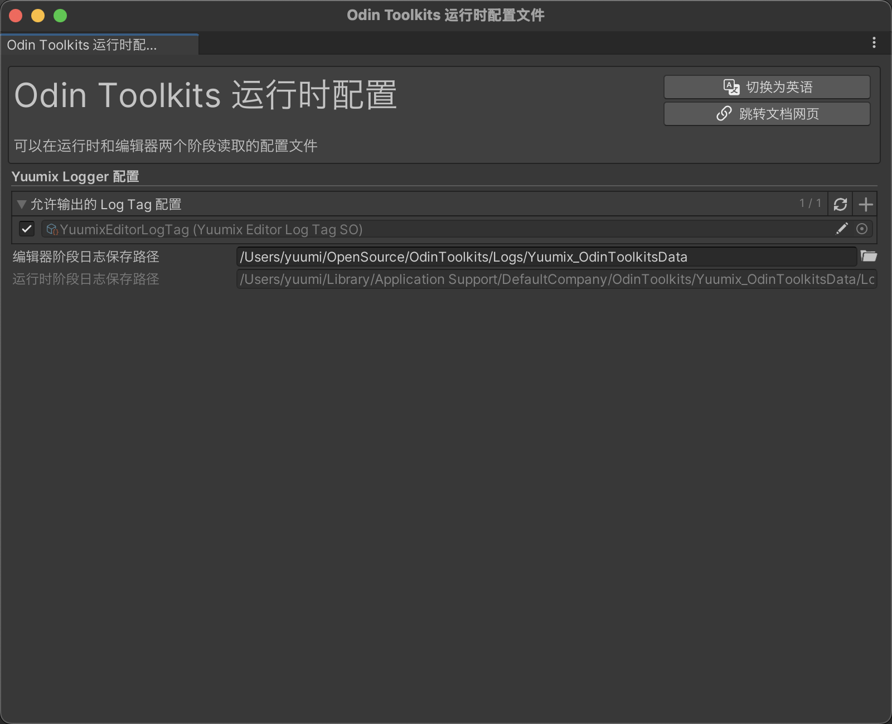

YuumixLogger 工具开发日志⚓︎
功能设计及预期开发路线⚓︎
分为两部分，基础封装和扩展写入文件。
基础封装⚓︎
- 日志可以区分运行时和编辑器阶段的，需要一个配置文件
- 以三种
LogType为核心封装，需要添加前缀，前缀颜色，后缀，或者一些调用方信息，发起者 - 在区分编辑器和运行时阶段的情况下，使用
Tag进行区分不同情况的日志，而且要易于扩展，尽量不修改源码。
扩展写入文件⚓︎
- 编辑器阶段和运行时阶段的日志存放路径配置
- 多线程写入
- 添加堆栈追踪信息
StackTrace，生成最终的写入文件的日志 - 优化
System.IO写入，增加缓冲区LogBuffer，不是每一条日志都调用System.IO写入一次 - 避免日志过多，过大，检测删除，或者新建
Log文件，间隔一定时间创建新的文件
开发过程思路⚓︎
配置文件⚓︎
笔者选择直接集成到 OdinToolkits 的 OdinToolkitsRuntimeConfig，因为日志工具是运行时和编辑器阶段都需要使用的工具，它的配置需要在两个阶段都能读取。
选择的方案是使用一个 ScriptableObject 文件直接放到 Resources 中读取。因为OdinToolkits 目标是低侵入性的插件，不清楚用户的加载资源的方式，所以使用最直接，最简单的 Resources 。
如果后续有影响流畅度，或者包体大小，再进行修改，或者也可以把这一个资源打包成 AssetBundle，然后默认加载。
但是不知道在哪些情况下可能造成冲突？评论区求助！
此时引入一个持久化单例场景对象，用来存储 OdinToolkitsRuntimeConfig 的引用。并且在最开始就加载资源。
此配置资源可能一直会被加载到内存中，不清楚是否会有问题？
这里先设计 OdinToolkitsRuntimeConfig ，暂时不管内部，之后用到的时候再进行详细配置
public sealed class Yuumix : PersistentOdinSingleton<Yuumix>
{
public OdinToolkitsRuntimeConfig OdinToolkitsRuntimeConfig
{
get
{
if (!_odinToolkitsRuntimeConfig)
{
_odinToolkitsRuntimeConfig = Resources.Load<OdinToolkitsRuntimeConfig>("Runtime_YuumixRuntimeConfig");
}
return _odinToolkitsRuntimeConfig;
}
}
OdinToolkitsRuntimeConfig _odinToolkitsRuntimeConfig;
protected override void Awake()
{
base.Awake();
// 初始加载一次
_odinToolkitsRuntimeConfig = Resources.Load<OdinToolkitsRuntimeConfig>("Runtime_YuumixRuntimeConfig");
if (!_odinToolkitsRuntimeConfig)
{
YuumixLogger.EditorLogError("YuumixRuntimeConfig 配置资源加载失败，需要检查 Resources 路径！", prefix: "Odin Toolkits");
}
}
[RuntimeInitializeOnLoadMethod(RuntimeInitializeLoadType.BeforeSceneLoad)]
static void YuumixStart()
{
_ = Instance;
}
}
Log 功能封装⚓︎
首先写一个所有最完整的参数的方法声明 CompleteLog ，展示有哪些参数可以配置。CallerFilePath,CallerLineNumber,CallerMemberName 标记的参数可以根据调用方自动获取值。
public static void CompleteLog(string message, LogType logType = LogType.Log,
Type logTagType = null,
object sender = null,
bool showTimeStamp = true,
string prefix = "", Color prefixColor = default,
bool useCallerSuffix = true,
string suffix = "", Color suffixColor = default,
[CallerFilePath] string filePath = "",
[CallerLineNumber] int lineNumber = 0,
[CallerMemberName] string memberName = "",
bool writeToFile = false)
{
LogInternal()
}
设计 LogInternal 内部封装，其中OdinToolkitsRuntimeConfig.Instance.CanLog(logTagType) 是配置文件中的方法，判断是否可以输出日志，后续会展开讲。
static void LogInternal(string message, LogType logType = LogType.Log,
Type logTagType = null,
object sender = null,
bool showTimeStamp = true,
string prefix = "", Color prefixColor = default,
bool useCallerSuffix = false,
string suffix = "", Color suffixColor = default,
bool writeToFile = false,
string filePath = "",
int lineNumber = 0,
string memberName = "")
{
if (logTagType != null && !OdinToolkitsRuntimeConfig.Instance.CanLog(logTagType))
{
return;
}
var sb = StringBuilderPool.Get();
sb = CreateMessage(sb, message, sender, showTimeStamp, prefix, prefixColor, useCallerSuffix,
suffix, suffixColor
);
if (useCallerSuffix)
{
sb.Append(" [")
.Append(Path.GetFileName(filePath))
.Append(" - line: ").Append(lineNumber)
.Append(" - ").Append(memberName)
.Append("]");
}
var logMessage = sb.ToString();
switch (logType)
{
case LogType.Log:
case LogType.Assert:
Debug.Log(logMessage);
break;
case LogType.Warning:
Debug.LogWarning(logMessage);
break;
case LogType.Error:
case LogType.Exception:
Debug.LogError(logMessage);
break;
default:
Debug.Log(logMessage);
break;
}
if (writeToFile)
{
WriteToFileExtension.Execute(logMessage, logType);
}
StringBuilderPool.Release(sb);
}
同时实现了一个 StringBuilder 对象池。
static readonly IObjectPool<StringBuilder> StringBuilderPool =
new ObjectPool<StringBuilder>(
() => new StringBuilder(),
actionOnRelease: sb => sb.Clear(),
defaultCapacity: 100,
maxSize: 1000);
设计 CreateMessage，挑选可以用于生成的参数，生成最终的日志信息
static StringBuilder CreateMessage(StringBuilder sb, string message,
object sender = null,
bool showTimeStamp = true,
string prefix = "", Color prefixColor = default,
bool useCallerSuffix = true,
string suffix = "", Color suffixColor = default)
{
if (showTimeStamp)
{
sb.Append("[").Append(NowTimeString).Append("] ");
}
if (sender != null)
{
sb.Append("[").Append(sender).Append("] ");
}
if (!prefix.IsNullOrWhiteSpace())
{
if (prefixColor != default)
{
var prefixColorString = prefixColor.ToHexString();
sb.Append("<color=#").Append(prefixColorString).Append(">")
.Append("[").Append(prefix)
.Append("]</color> ");
}
}
message = message.Trim(' ');
sb.Append(message);
if (useCallerSuffix || suffix.IsNullOrWhiteSpace() || suffixColor == default)
{
return sb;
}
var suffixColorString = suffixColor.ToHexString();
sb.Append("<color=#").Append(suffixColorString).Append(">")
.Append("[").Append(suffix)
.Append("]</color> ");
return sb;
}
Tag 设计⚓︎
CompleteLog 的第三个参数是 logTagType = null, Type 类型，logTagType 默认为 null，项目前期是不需要 Tag 进行区分的，所以设计为 logTagType == null 时是可以输出的，在后期确定需要区分时，再添加这个参数，可以减少前期调用负担。
那么此时就要引入一个设计，LogTag , 为了满足 SOLID 中，对扩展开放，对修改关闭的原则，设计采用 ScriptableObject，而不使用枚举，因为枚举无法使用 partial ，用户想要新增 Tag，则 必须修改枚举的源码 ，这是笔者不希望的。
此时又出现了另外一点，如果实际判断是使用 Type，那么我似乎只需要抽象类，扩展时继承抽象类，不一定要采用 ScriptableObject。此处 Type 默认是无法序列化的，如果需要显示，则需要使 Odin，为了配置过程更加直观，并且遵循减少使用 Odin 序列化的理念，才选择 ScriptableObject。根据 Odin 官方最佳实践的推荐用法，非必要，减少 Odin 序列化的使用。官网原文
// 抽象类
public abstract class LogTagSO : ScriptableObject { }
// Odin Toolkits 默认实现类
public class YuumixEditorLogTagSO : LogTagSO { }
扩展时非常简单，直接继承，然后生成一个资源实例即可。
OdinToolkitsRuntimeConfig 配置文件设计⚓︎
现在我们再来设计 OdinToolkitsRuntimeConfig 内部成员，笔者是计划整个 Odin Toolkits 插件只使用一个运行时配置，把需要的配置全部放到此类中。如果后续成员实在过多，再考虑独立配置文件。
public class OdinToolkitsRuntimeConfig : ScriptableObject, IOdinToolkitsReset
{
// ... 省略
#region Yuumix Logger
[PropertyOrder(10)]
[MultiLanguageText("允许输出的 LogTag 配置", "LogTag List which are allowed Log")]
[AssetList]
[CustomContextMenu("Reset", nameof(ResetCanLogTag))]
public List<LogTagSO> canLogTag = new List<LogTagSO>();
IEnumerable<Type> CanLogCategoryTypes => canLogTag.Select(e => e.GetType());
public bool CanLog(Type type) => CanLogCategoryTypes.Contains(type);
void ResetCanLogTag()
{
canLogTag = new List<LogTagSO>()
{
Resources.Load<YuumixEditorLogTagSO>("YuumixEditorLogTag")
};
}
#endregion
// ... 省略
}

OdinToolkitsRuntimeConfig 窗口截图
// AssetList 特性可以自动收集项目中此类型的资源，确定输出某个 `Tag` 的信息时，勾选即可，非常直观，方便。
[AssetList]
public List<LogTagSO> canLogTag = new List<LogTagSO>();
如果在编辑器阶段运行中，只想测试某几个 Tag，直接取消勾选其他，那么即可立即生效。和 使用自定义的宏定义 相比，不需要退出运行状态，不需要重新编译。而且内部是首先判断是否输出，不会直接进行信息合并，可以减少一点性能消耗。
另外使用 CustomContextMenu 特性增加了右键菜单按钮 - 重置
另外这种方式即使没有 Odin，也可以实现，只是需要手动添加资源到列表，没有那么直观而已。
OdinToolkitsRuntimeConfig 配置文件补充⚓︎
以上步骤，已经完成了一个简单的日志工具，接下来要扩展日志写入文件
- 编辑器阶段的日志存放路径，
- 打包后的运行时的存放路径。
public class OdinToolkitsRuntimeConfig : ScriptableObject, IOdinToolkitsReset
{
// ... 省略
#region Yuumix Logger
// ... 省略
[PropertyOrder(20)]
[FolderPath]
[MultiLanguageText("编辑器阶段日志保存路径", "Editor Stage Log Save Path")]
[CustomContextMenu("Reset", nameof(ResetEditorStageLogSavePath))]
[LabelWidth(200)]
public string editorStageLogSavePath =
Application.dataPath.Replace("/Assets", "") + "/Logs/Yuumix_OdinToolkitsData";
[PropertyOrder(20)]
[ShowInInspector]
[ReadOnly]
[LabelWidth(200)]
[MultiLanguageText("运行时阶段日志保存路径", "RuntimeStageLogSavePath")]
public string RuntimeStageLogSavePath => Application.persistentDataPath + "/Yuumix_OdinToolkitsData/Logs";
// ... 省略
void ResetEditorStageLogSavePath()
{
editorStageLogSavePath = Application.dataPath.Replace("/Assets", "") + "/Logs/Yuumix_OdinToolkitsData";
}
#endregion
// ... 省略
}
给运行时配置增加两个路径字段，一个是编辑器阶段的路径，可以修改。运行时阶段的不能修改，使用 Unity API 可以多平台兼容。
多线程写入⚓︎
设计 WriteToFileExtension，进行文件写入，使用静态构造函数进行初始化设置。
- 确保编辑器日志存放文件夹存在
- 启动线程
- 停止线程的方法订阅相关退出事件
public static class WriteToFileExtension
{
// ... 省略
static readonly Thread LogWriterThread;
static readonly CancellationTokenSource CancellationToken;
static string EditorStageLogSaveFolderPath => OdinToolkitsRuntimeConfig.Instance.editorStageLogSavePath;
static string RuntimeStageLogSaveFolderPath => OdinToolkitsRuntimeConfig.Instance.RuntimeStageLogSavePath;
static WriteToFileExtension()
{
if (!Directory.Exists(EditorStageLogSaveFolderPath))
{
Directory.CreateDirectory(EditorStageLogSaveFolderPath);
}
// 传入一个方法，构造一个线程行为
LogWriterThread = new Thread(WriteToFileThreadCommand)
{
IsBackground = true,
Name = "YuumixLoggerWriter"
};
// 设计一个停止 Token
CancellationToken = new CancellationTokenSource();
LogWriterThread.Start()
Application.quitting -= ShutdownThread;
Application.quitting += ShutdownThread;
AppDomain.CurrentDomain.ProcessExit -= EncapsulateShutdownThread;
AppDomain.CurrentDomain.ProcessExit += EncapsulateShutdownThread;
#if UNITY_EDITOR
AssemblyReloadEvents.beforeAssemblyReload -= ShutdownThread;
AssemblyReloadEvents.beforeAssemblyReload += ShutdownThread;
#endif
}
// ... 省略
static void EncapsulateShutdownThread(object o, EventArgs eventArgs)
{
ShutdownThread();
}
static void ShutdownThread()
{
try
{
// 在退出时检查总大小
CheckTotalFolderSize();
CancellationToken?.Cancel();
// 等待最多2秒
LogWriterThread?.Join(2000);
// 强制刷新缓存区一次，写入剩余的内容
FlushBuffer();
}
catch (Exception ex)
{
YuumixLogger.LogError($"Failed to shutdown YuumixLogger WriteToFileExtension Thread: {ex}",
prefix: "YuumixLogger WriteToFile Error");
return
static void CheckTotalFolderSize()
{
// ... 省略，暂时不考虑内部实现
}
}
}
// 传入一个方法，构造一个线程行为
LogWriterThread = new Thread(WriteToFileThreadCommand)
{
IsBackground = true,
Name = "YuumixLoggerWriter"
};
// 设计一个停止 Token
CancellationToken = new CancellationTokenSource();
LogWriterThread.Start();
Token，在静态构造函数的结尾，去订阅事件，防止线程出错。分别是 Unity 编辑器程序，Unity 的编译的域结束，还有重新编译之前。
如果还有其他可能出错的时机，直接添加事件订阅即可。
写入文件方法 WriteToFileThreadCommand⚓︎
下一步进入实际写入的方法 WriteToFileThreadCommand
启动这个线程后，将会一直调用，一直写入，此处可以直接执行如下伪代码，但是为了增加流畅度，将进行其他优化。
using (var writer = new StreamWriter(_currentLogFilePath, true, Encoding.UTF8))
{
writer.Write(要写入文件的信息);
}
为了减少写入文件的 System.IO 调用次数，进行了分层优化，现在实际的写入流程是: 首先 YuumixLogger 调用 WriteToFileExtension 的 Execute 的方法，把整合的信息与堆栈信息合并，然后压入日志队列存储，然后等待推出到缓存区，以缓存区为单位，一次写入到文件。
static void WriteToFileThreadCommand()
{
// 只要没有停止，则一直尝试写入
while (!CancellationToken.Token.IsCancellationRequested)
{
// 如果日志队列中存在信息，则加载到缓冲区，准备写入
while (LogQueue.TryDequeue(out var logEntry))
{
LogBuffer.Append(logEntry)
// 检查缓冲区大小是否超过限制
if (LogBuffer.Length >= MaxBufferSize)
{
FlushBuffer();
}
}
if ((DateTime.Now - _lastFlushTime).TotalMilliseconds >= FlushIntervalMs)
{
FlushBuffer();
}
// 短暂休眠避免CPU占用过高
Thread.Sleep(10);
}
// 线程结束后，继续刷新一次缓存区，防御性编程
FlushBuffer();
}
现在分析写入文件的条件，有两个。 一是如果在时间间隔内，传入的日志信息大于了缓冲区最大限制，则直接触发 IO 写入。 二是超过了时间间隔，也写入一次。
暂时不考虑写入的值，也就是缓冲区的值 LogBuffer，先把流程跑通。
进入 FlushBuffer 方法⚓︎
static void FlushBuffer()
{
if (LogBuffer.Length == 0)
{
return;
}
try
{
CheckFileSizeAndRename();
// StreamWriter 可以直接创建新文件
using (var writer = new StreamWriter(CurrentLogFilePath, true, Encoding.UTF8))
{
writer.Write(LogBuffer.ToString());
}
LogBuffer.Clear();
_lastFlushTime = DateTime.Now;
}
catch (Exception ex)
{
YuumixLogger.LogError($"Failed to flush log buffer: {ex}", prefix: "YuumixLogger WriteToFile Error");
LogBuffer.Clear();
}
// ... 省略
}
如果缓冲区的长度不等于 0，则使用 StreamWriter 对象写入，第二个参数为 true，选择在文件尾部添加，使用 using 包裹，可以在使用完成后自动处理。
上述代码中还做了一次日志文件大小的检测 CheckFileSizeAndRename，用于防止一个文件过大。
因为每次添加内容时，首先要读取文件，如果文件很大，读取耗时就会更多，属于性能优化。
进入 CheckFileSizeAndRename⚓︎
// 最大文件大小（MB）
const int MaxFileSizeMb = 10;
// ... 省略
void CheckFileSizeAndRename()
{
if (File.Exists(CurrentLogFilePath))
{
var fileInfo = new FileInfo(CurrentLogFilePath);
if (fileInfo.Length >= MaxFileSizeMb * 1024 * 1024)
{
var archiveFilePath = GetArchiveFilePath();
// 重命名，那么原来路径的文件就没有了
if (File.Exists(CurrentLogFilePath))
{
File.Move(CurrentLogFilePath, archiveFilePath);
}
}
}
}
如果该路径存在文件，则检测文件大小，如果大于了最大限制，则进行文件分段，使用 GetArchiveFilePath 获取分段文件的路径。
进入 GetArchiveFilePath⚓︎
static string GetArchiveFilePath()
{
var basePath = CurrentLogFilePath.Replace(".log", "");
var index = 1;
string archiveFilePath;
do
{
archiveFilePath = $"{basePath}_Archive_{index}.log";
index++;
} while (File.Exists(archiveFilePath));
return archiveFilePath;
}
do while 首先执行一次，然后后续只有满足条件才执行，否则结束循环。
回到 LoggerBuffer 缓冲区设计⚓︎
缓冲区设计，使用 StringBuilder 类，可以快速拼接字符串，并且可以指定编码，避免了使用 + 运算符，提高性能。根据传入的 message 和 logType 构建一个日志信息，然后压入队列。var stackTrace = new StackTrace(true); 可以获取堆栈信息。
public static void Execute(string message, LogType logType)
{
if (LogQueue.Count >= MaxQueueSize)
{
YuumixLogger.LogError("日志队列数量大于等于 " + MaxQueueSize + "，日志输出数量似乎异常，检查是否存在每帧输出");
return;
}
var logEntry = BuildLogEntry(message, logType);
LogQueue.Enqueue(logEntry);
return;
// 局部方法
static string BuildLogEntry(string message, LogType logType)
{
var sb = new StringBuilder();
sb.Append($"[{DateTime.Now:yyyy-MM-dd HH:mm:ss.fff}] ");
switch (logType)
{
case LogType.Log:
sb.Append("[INFO] >>>>>>>>>>>>>>>>>>>>>>>>>>>>>>>>>>>>>>>>>>>>>>>>>>>>>>>>>>>>>>>>>>>>>>>>");
break;
case LogType.Warning:
sb.Append("[WARNING] >>>>>>>>>>>>>>>>>>>>>>>>>>>>>>>>>>>>>>>>>>>>>>>>>>>>>>>>>>>>>>>>>>>>>>>>");
break;
case LogType.Error:
sb.Append("[ERROR] >>>>>>>>>>>>>>>>>>>>>>>>>>>>>>>>>>>>>>>>>>>>>>>>>>>>>>>>>>>>>>>>>>>>>>>>");
break;
case LogType.Assert:
sb.Append("[ASSERT] >>>>>>>>>>>>>>>>>>>>>>>>>>>>>>>>>>>>>>>>>>>>>>>>>>>>>>>>>>>>>>>>>>>>>>>>");
break;
case LogType.Exception:
sb.Append(
"[EXCEPTION] >>>>>>>>>>>>>>>>>>>>>>>>>>>>>>>>>>>>>>>>>>>>>>>>>>>>>>>>>>>>>>>>>>>>>>>>");
break;
}
sb.AppendLine();
sb.AppendLine(message);
var stackTrace = new StackTrace(true);
sb.AppendLine().AppendLine("========================== Stack Trace Start ==========================");
sb.Append(stackTrace);
sb.AppendLine();
sb.AppendLine("========================== End ==========================");
sb.AppendLine();
return sb.ToString();
}
}
日志文件夹大小优化⚓︎
所有日志文件保存在设置的文件夹下，并设置文件夹大小限制，在结束线程的时候检查一次，把文件夹所有的日志文件相加并根据修改时间排序，如果超过限制，开始执行删除行为，删除 10% 的日志文件。
static void CheckTotalFolderSize()
{
string logFolderPath;
#if UNITY_EDITOR
logFolderPath = EditorStageLogSaveFolderPath;
#else
logFolderPath = RuntimeStageLogSaveFolderPath;
#endif
if (!Directory.Exists(logFolderPath))
{
return;
}
var allFiles = Directory.GetFiles(logFolderPath)
.Select(f => new FileInfo(f))
.OrderBy(f => f.LastWriteTime)
.ToList();
var totalSize = allFiles.Sum(file => file.Length);
if (totalSize < MaxTotalFolderSize)
{
return;
}
// 大于或者等于 MaxTotalFolderSize，就要删除 10% 的文件
long deletedSize = 0;
foreach (var file in allFiles)
{
file.Delete();
deletedSize += file.Length;
if (deletedSize >= DeleteSizeThreshold)
{
break;
}
}
}
完整内容查看 GitHub 项目仓库，如果有问题或者建议或者优化可以首先发布在评论区，或者提交 issue，沟通后可以提交PR。